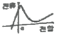
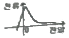
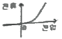
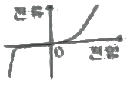
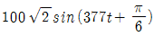

전자캐드기능사 (2009-09-27 기출문제)
1과목: 전기전자공학(대략구분)
1. 제너 다이오드의 전압(V), 전류(I) 특성을 나타내는 것으로 가장 적합한 것은?




(정답률: 69%)

2. 수정발진기는 수정진동자의 어떤 전기적인 특성을 이용하는가?
- 지벡효과
- 압전기현상
- 펠티에효과
- 전자유도현상
(정답률: 55%)
3. 어떤 전지에 15[Ω]의 저항을 연결하면 0.2[A]의 전류가 흐르고, 6[Ω] 저항을 연결하면 0.4[A]의 전류가 흐를 때 이 전자의 내부저항은?
- 2[Ω]
- 3[Ω]
- 3.5[Ω]
- 5[Ω]
(정답률: 54%)
4. 코일에 발생하는 기전력의 방향은 코일을 통과하는 자속의 증감을 방해하는 방향으로 발생한다는 법칙은?
- 렌쯔의 법칙
- 플레밍의 법칙
- 앙페르법칙
- 비오사바르법칙
(정답률: 65%)
5. 콘덴서 C1= 20[㎌], C2= 40[㎌]를 직렬로 연결하고 양단에 300[V]의 전압을 인가하였을 때 C1양단에 걸리는 전압은?
- 50[V]
- 100[V]
- 150[V]
- 200[V]
(정답률: 31%)
6. 트랜지스터 증폭회로에서 부궤환을 시켰을 때 발생하는 현상으로 적합하지 않은 것은?
- 잡음이 감소한다.
- 전압이득이 증가한다.
- 안정도가 좋아진다.
- 일그러짐이 감소한다.
(정답률: 63%)
7. 연산 증폭기에서 차동 이득(Ad)이 10000 동상 이득(Ac)이 10일 때 동상신호제거비(CMRR)는?
- 20[㏈]
- 40[㏈]
- 60[㏈]
- 80[㏈]
(정답률: 48%)
8. C급 증폭기의 가장 큰 장점은?
- 잡음이 감소한다.
- 온도특성이 좋다.
- 회로구성이 간편하다.
- 전력효율이 좋다.
(정답률: 60%)
9. 순시전압이

[V] 일 때 이 순시 전압의 주파수는 약 몇 [Hz] 인가?- 50[Hz]
- 60[Hz]
- 100[Hz]
- 120[Hz]
(정답률: 56%)
10. “두 전하 사이에 작용하는 힘의 크기는 두 전하의 곱에 비례하고 두 전하 사이의 거리의 제곱에 반비례한다.”는 어떠한 법칙을 설명하고 있는가?
- 옴의 법칙
- 전자유도 법칙
- 쿨롱의 법칙
- 비오사바르의 법칙
(정답률: 69%)
11. 이미터 접지 트랜지스터 증폭기에서 입ㆍ출력 전압의 위상차는?
- 0도
- 90도
- 180도
- 270도
(정답률: 57%)
12. 다음 펄스 발생 회로 중에서 기억소자로 사용되는 플립플롭에 해당하는 것은?
- 타이머 IC 회로
- 비안정 멀티바이브레이터
- 단안정 멀티바이브레이터
- 쌍안정 멀티바이브레이터
(정답률: 71%)
13. 공기의 비투자율은 약 얼마인가?
- 0
- 1
- 6.33 x 104
- 9 x 1019
(정답률: 58%)
14. 이미터 접지 트랜지스터 증폭회로에서 IB가 50[㎂]이고, IC가 3.65[㎃]일 때, IE는?
- 0.7[㎃]
- 2.6[㎃]
- 3.6[㎃]
- 3.7[㎃]
(정답률: 45%)
15. 다음 중 과잉전자를 만드는 불순물은?
- 도너
- 억셉터
- P형 반도체
- 진성반도체
(정답률: 52%)
2과목: 전자계산기일반(대략구분)
16. 마이크로프로세서 내에서 어떤 특정한 문제를 처리하기 위해 준비되어 호출 명령으로 쓰이는 것은?
- 인터럽트 루틴
- 서브 루틴
- 액세스 루틴
- 레지스터 루틴
(정답률: 53%)
17. 다음 기억 장치 중 600Mbyte 이상의 대용량을 저장할 수 있으며, 원판형으로서 비교적 가볍고 휴대가 간편한 것은?
- 자기 테이프(magnetic tape)
- 플로피 디스크(floppy disk)
- 하드 디스크(hard disk)
- CD-ROM(compact disk ROM)
(정답률: 61%)
18. floating point(부동소수점) 표시법에 대한 설명으로 틀린 것은?
- 소수점 수치 기억에 적합하다.
- 소수부의 부호가 양수이면 1, 음수이면 0으로 표시한다.
- 지수부분과 가수부분을 구분한다.
- 소수점의 위치를 맞출 필요가 없다.
(정답률: 42%)
19. 1면에 150개의 트랙을 사용할 수 있는 양면 자기디스크에서 1트랙은 8개의 섹터로 되어 있고, 섹터 당 400Word를 기억시킬 수 있는 경우에 이 디스크의 용량은?
- 480000 word
- 960000 word
- 1920000 word
- 3840000 word
(정답률: 45%)
20. 2진수의 연산으로 옳은 것은?
- 0 + 0 = 1
- 0 + 1 = 0
- 1 + 0 = 1
- 1 + 1 = 2
(정답률: 79%)
21. 다음 메모리 중 재생(refresh)하기 위한 별도의 회로와 프로그램이 필요한 것은?
- ROM
- USB 메모리
- DRAM
- SRAM
(정답률: 52%)
22. 컴퓨터의 기억장치 레지스터 중 MBR(Memory Buffer Register)에 대한 설명으로 옳은 것은?
- 메모리로부터 읽거나(read), 쓴(write) 데이터를 일시적으로 저장하기 위한 레지스터
- 실제 주소를 계산하기 위해 주소를 기억하는 레지스터
- 연산 결과의 상태를 기억하는 레지스터
- 실행될 명령 코드가 저장되어 있는 레지스터
(정답률: 57%)
23. 컴퓨터 내부에서 수치자료를 표현하는데 사용하지 않는 형식은?
- 고정 소수점 데이터 형식
- 부동 소수점 데이터 형식
- 팩 형식
- 아스키 데이터 형식
(정답률: 41%)
24. 컴퓨터가 이해할 수 있는 언어로 변환 과정이 필요 없는 언어는?
- Assembly
- COBOL
- Machine Language
- LISP
(정답률: 66%)
25. 다음 중 C 언어의 자료형과 거리가 먼 것은?
- integer
- double
- char
- short
(정답률: 63%)
26. 순서도 사용에 대한 설명 중 틀린 것은?
- 프로그램 코딩의 직접적인 자료가 된다.
- 오류 발생시 그 원인을 찾아 수정하기 쉽다.
- 프로그램의 내용과 일 처리 순서를 파악하기 쉽다.
- 프로그램 언어마다 다르게 표현되므로 공통적으로 사용할 수 없다.
(정답률: 84%)
27. 주소 필드에 있는 값이 실제 데이터가 기억된 메모리 내의 주소가 되는 방식은?
- 간접주소방식
- 즉시주소방식
- 절대주소방식
- 직접주소방식
(정답률: 47%)
28. 부품 선정시의 핵심사항과 가장 거리가 먼 것은?
- 부품의 단가
- 납품 조건
- 부품외형의 색상
- 부품의 신뢰성
(정답률: 74%)
29. 시퀀스 제어용 기호와 설명이 옳게 짝지어진 것은?
- PT : 계기용 변압기
- TS : 과전류 계전기
- OCR : 텀블러 스위치
- ACB : 유도 전동기
(정답률: 60%)
30. 다음 중 여러 장치를 통제하는 기능을 갖는 장치는?
- I/O unit
- ALU
- memory unit
- control unit
(정답률: 71%)
3과목: 전자제도(CAD) 이론(대략구분)
31. 수동소자로 전류의 흐름에 따라 자기에너지를 저장하며, 전류가 급하게 변화하는 것을 억제하기 위해 사용되는 소자는?
- 저항기(R)
- 가변저항기(VR)
- 유도기(L)
- 콘덴서(C)
(정답률: 41%)
32. 전자회로에서 부분 상호간에 전달되는 신호의 계통을 알기 쉽게 나타낸 선도로서 계통도 또는 구성도 라고 하는 것은?
- 블록도
- 회로도
- 결선도
- 배치도
(정답률: 70%)
33. CAD 소프트웨어의 실행 화면에서 커서의 좌표 위치나 사용 중인 도면 층의 이름 등 각종 정보가 표시되는 부분은?
- 상태줄
- 명령 영역
- 그리기 영역
- 도구 아이콘
(정답률: 76%)
34. 도면에서 도면의 축소나 확대, 복사의 작업과 이들의 복사 도면을 취급 할 때 편의를 위하여 표시하는 것은?
- 윤곽선
- 도면의 비교눈금
- 도면의 구역
- 재단마크
(정답률: 63%)
35. 제도의 척도 중 실물의 크기보다 작게 그리는 것은?
- 실척
- 축척
- 배척
- NS
(정답률: 87%)
36. 회로도의 작성법 설명으로 틀린 것은?
- 정해진 도 기호를 명확하면서도 간결하게 그려야 한다.
- 신호의 흐름은 도면의 왼쪽에서 오른쪽으로 한다.
- 전체적인 배치와 균형이 유지되게 그려야 한다.
- 신호의 흐름은 아래에서 위로 흐르게 한다.
(정답률: 82%)
37. 인쇄회로기판에서 부품의 단자 또는 도체 상호 간을 접속하기 위해 구멍(Hole)의 주위에 만든 특정한 도체 부분이 납땜이 될 수 있도록 처리하는 것은?
- 실크스크린
- Drill(구멍 가공)
- 패턴
- 납 마스크
(정답률: 63%)
38. 프린트 기판 설계시 배선으로 인한 인덕턴스 발생을 줄이기 위한 방법으로 가장 옳은 것은?
- 전원 라인을 가늘고, 길게 배선한다.
- 전원 라인을 가늘고, 짧게 배선한다.
- 전원 라인을 굵고, 길게 배선한다.
- 전원 라인을 굵고, 짧게 배선한다.
(정답률: 80%)
39. 인생회로기판에 배치될 부품의 위치와 형태 등에 대한 부품 배치도의 설명으로 틀린 것은?
- 부품은 균형 있게 배치한다.
- 부품 상호 간에 신호가 유도되지 않도록 한다.
- 인쇄회로기판의 점퍼선은 부품으로 간주하지 않으며 표시하지 않는다.
- 부품의 종류, 기호, 용량, 외형도, 핀의 위치, 극성 등을 표시하여야 한다.
(정답률: 81%)
40. 인쇄회로기판(PCB)에 대한 설명으로 옳지 않은 것은?
- 오배선의 우려가 없다.
- 대량 생산의 효과가 있다.
- 제품의 균일성과 신뢰성이 높다.
- 소품종 다량 생산의 경우에는 제조 단가가 높다.
(정답률: 68%)
41. 제도규칙에서 표준규격에 대한 국제 및 국가별 규격 명칭 연결이 옳은 것은?
- 미국 규격 – JIS
- 일본 공업 규격 – DIN
- 국제 표준화 기구 – ISO
- 영국 규격 - ANSI
(정답률: 86%)
42. 유연성 인쇄회로기판으로도 불리며, 카메라 등의 굴곡진 부분에 많이 사용되는 기판은?
- 에폭시 기판
- 페놀 기판
- 메탈 기판
- 플렉시블 기판
(정답률: 78%)
43. CAD용 컴퓨터의 데이터 버퍼에 대한 설명으로 옳은 것은?
- 출력작업이 이루어지는 동안에도 다른 작업을 행할 수 있다.
- 주변장치와 8 BIT 병렬 데이터 통신을 하기 위한 인터페이스다.
- 사용자 정의 형상을 컴퓨터가 이해할 수 있는 수치로 나타낸다.
- 36핀 커넥터로 되어 있다.
(정답률: 56%)
44. 수정 진동자를 나타내는 도 기호(symbols)는?
(정답률: 82%)
45. 인쇄회로기판이 갖추어야 할 특성과 거리가 먼 것은?
- 온도 상승에 대하여 변화가 적어야 한다.
- 납땜시 가열 등에 의해서는 안정되어야 한다.
- 기계적 강도를 갖추고, 가공이 용이해야 한다.
- 공정 중 약물 처리에 대해 특성이 변화하여야 한다.
(정답률: 81%)
46. 제도의 목적을 달성하기 위한 도면의 요건으로 틀린 것은?
- 대상물의 도형과 함께 필요로 하는 크기, 모양, 자세, 위치의 정보를 포함하여야 한다.
- 도면의 정보를 명확하게 하기 위하여, 복잡하고 어렵게 표현하여야 한다.
- 가능한 한 넓은 기술 분야에 걸쳐 정합성, 보편성을 가져야 한다.
- 복사 및 도면의 보존, 검색, 이용이 확실히 되도록 내용과 양식을 구비하여야 한다.
(정답률: 83%)
47. NAND 게이트가 내장된 14핀 DIP IC 에서 핀과 핀 사이의 간격은?
- 0.254[mm]
- 1.252[mm]
- 2.25[mm]
- 2.54[mm]
(정답률: 57%)
48. 부품 중 2000000[Ω]의 저항을 배치하고 그 값을 표시한 것 중 가장 적절한 표시 방법은?
- 2000000[Ω]
- 2000[kΩ]
- 2[μΩ]
- 2[MΩ]
(정답률: 67%)
49. 전자 회로도를 작성하는 일반적인 규칙의 설명으로 틀린 것은?
- 선의 교차는 가능한 적게 한다.
- 정해진 기호(symbol)와 문자로 그린다.
- 대각선과 곡선은 가능한 직선으로 그린다.
- 물리적으로 연결된 것은 실선으로 그린다.
(정답률: 65%)
50. 다음 기판 재질 중에서 내열성이 좋고, 다층 기판 제작에 용이하며, 플렉시블(Flexible: 휨이나 절곡)한 기판 제작에 많이 사용되는 것은?
- 페놀(Phenol) 수지
- 에폭시(Epoxy) 수지
- 폴리이미드 필름
- 테프론(Teflon)
(정답률: 58%)
51. KS의 부문별 기호에서 기본적인 내용에 관계되는 분류기호는?
- KS A
- KS B
- KS C
- KS D
(정답률: 72%)
52. 인쇄회로기판 설계 시 배선에 흐르는 전류량에 따라 고려할 사항으로 옳은 것은?
- 기판의 재질과 두께
- 배선의 폭과 동박의 두께
- 동박의 두께와 배선의 모양
- 배선의 배열과 기판의 두께
(정답률: 59%)
53. 다음 중 전자 CAD 용 프로그램(EDA 툴)이 아닌 것은?
- OrCAD
- CADSTAR
- AutoCAD
- PCAD
(정답률: 73%)
54. 전기 신호의 중계, 제어 등을 행하는 기구 부품(electro-mechanical component)이 아닌 것은?
- 다이오드
- 소켓
- 스위치
- 커넥터
(정답률: 47%)
55. 다음 중 출력 장치로 볼 수 없는 것은?
- 마우스
- 플로터
- 프린터
- 모니터
(정답률: 83%)
56. CAD 활용 시의 특징이 아닌 것은?
- 보다 많은 인력과 시간이 소요된다.
- 신제품 개발에 적극적으로 대처할 수 있다.
- 수작업에 의존하던 디자인의 자동화가 이루어진다.
- 정확하고 효율적인 작업으로 개발 기간이 단축된다.
(정답률: 85%)
57. 저항값이 낮은 저항기로서 대전력용 및 표준저항기 등과 같이 고정밀도 저항기로 사용되는 저항기는?
- 탄소피막 저항기
- 솔리드 저항기
- 권선 저항기
- 모듈 저항기
(정답률: 69%)
58. 다음 중 일반적으로 전자 CAD을 이용하여 할 수 없는 기능은?
- 전원을 표시할 수 있다.
- 부품의 심벌을 작도할 수 있다.
- 기판의 외형을 설계할 수 있다.
- 전자제품의 케이스 가공용 데이터를 출력할 수 있다.
(정답률: 64%)
59. 세라믹 콘덴서의 표면에 “102K”로 표기되어 있다면 이 콘덴서의 정전 용량 값과 허용오차 값은?
- 용량 값 : 1000[pF], 허용오차 : ±10[%]
- 용량 값 : 1000[pF], 허용오차 : ±5[%]
- 용량 값 : 100[pF], 허용오차 : ±20[%]
- 용량 값 : 100[pF], 허용오차 : ±10[%]
(정답률: 54%)
60. 일반적으로 전자캐드(CAD)에서 회로도를 그리는 프로그램을 통칭하는 용어는?
- Layout
- Schematic
- Gerber
- CAM
(정답률: 70%)